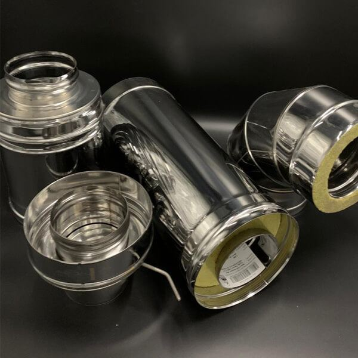
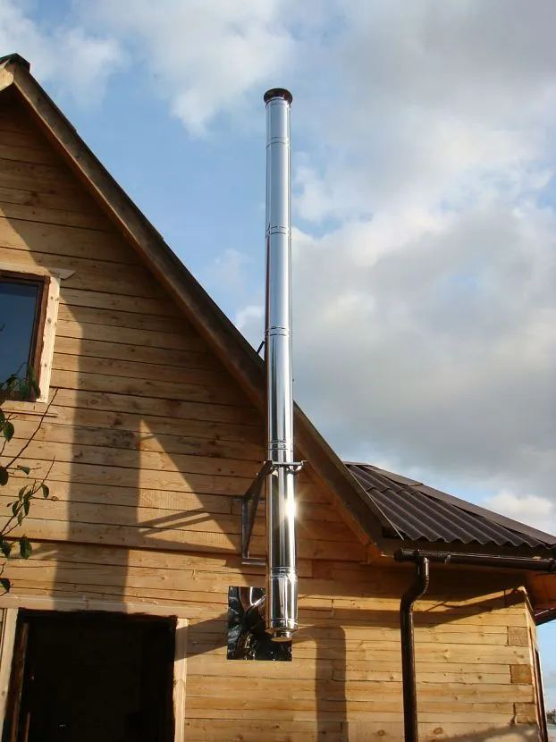
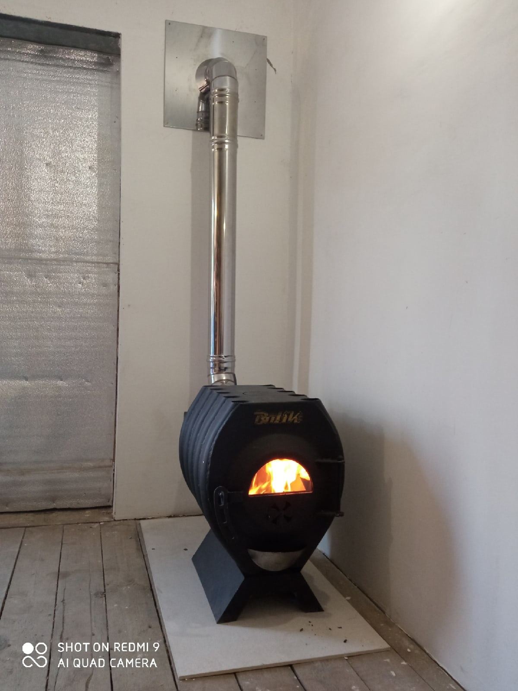
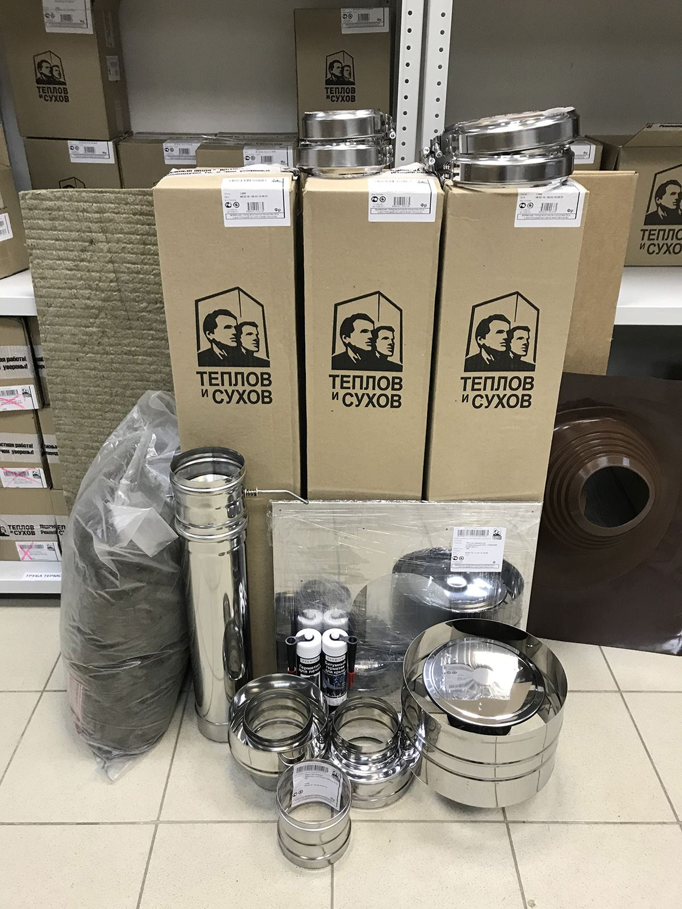
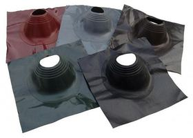
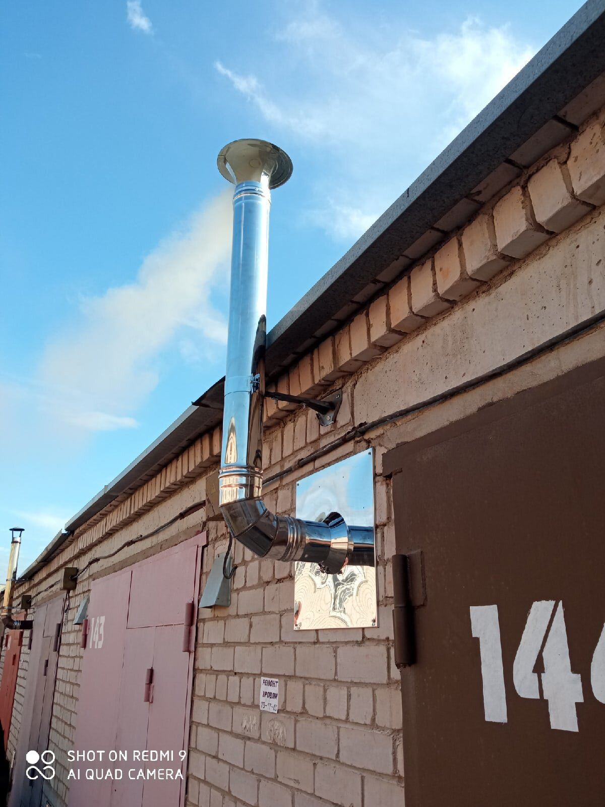
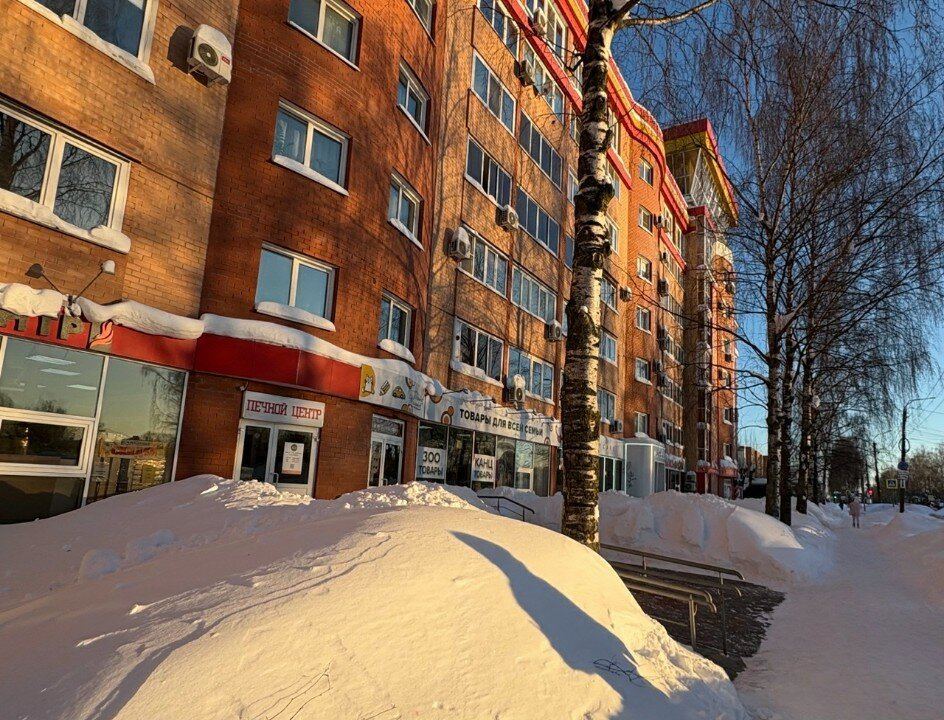

- 487 позиций в прайсе
- Киров, улица Сурикова, 14А
- пн-пт 09:00–18:00; сб 09:00–15:00
Дымоходы и печи
Подберут комплект дымохода под вашу печь, составят смету и соберут набор к приезду.







Прайс · 487 позиций
Часто берут10
| Огнестойкая плита ФЛАММА 1200х800х8 | 2 690 ₽ |
| Огнестойкая плита Фаспан 1200х600х8 | 2 000 ₽ |
| Плита МАГНЕЗИТ 1200Х600Х8ММ | 1 700 ₽ |
| Герметик Термостойкий (Печной) 290 мл, до 1500*, шт. | 700 ₽ |
| Термостойкая краска эмаль CERTA (Церта), цв. чёрный, до 1000 °C (аэрозоль 520 мл.) | 690 ₽ |
| Огнеупорное волокно СУПЕРСИЛ 1000°С 96КГ/М3 1П/М | 450 ₽ |
| Базальтовый картон фольгированный 1250х600х5 | 390 ₽ |
| Базальтовый картон 1250х600х10 | 320 ₽ |
| Базальтовая вата 1000Х500Х50ММ (ТИБ) | 300 ₽ |
| Втулка керамическая | 20 ₽ |
Изоляционные материалы7
| Шнур уплотнительный термостойкий, стекловолокно. ⌀ 6 мм (1 метр) | 185 ₽ |
| Шнур уплотнительный термостойкий, стекловолокно. ⌀ 10 мм (1 метр) | 500 ₽ |
| Шнур уплотнительный термостойкий, стекловолокно. ⌀ 8 мм (1 метр) | 230 ₽ |
| Шнур уплотнительный термостойкий, стекловолокно. ⌀ 12 мм (1 метр) | 550 ₽ |
| Шнур печной (керамика) ⌀ 6 мм (1 метр) | 145 ₽ |
| Плита Везувий Фаспан Кирпичный №1005 Вертикаль (1200х800х8мм) ПОД ЗАКАЗ | 2 826 ₽ |
| Плита Везувий Фаспан Песочный №1006 Вертикаль (1200х800х8мм) ПОД ЗАКАЗ | 2 826 ₽ |
Стеновые крепления дымохода2
| Крепление подвес КП 350 | 705 ₽ |
| Крепление подвес КП 700 | 1 261 ₽ |
Конусы дымохода42
| Конус Термо КТ-Р 430-0.5/430 D80/140 М | 918 ₽ |
| Конус Термо КТ-Р 430-0.5/430 D100/160 М | 928 ₽ |
| Конус Термо КТ-Р 430-0.5/430 D110/180 М | 936 ₽ |
| Конус Термо КТ-Р 430-0.5/430 D115/180 М | 944 ₽ |
| Конус Термо КТ-Р 430-0.5/430 D115/200* (М) | 965 ₽ |
| Конус Термо КТ-Р 430-0.5/430 D120/180 М | 954 ₽ |
| Конус Термо КТ-Р 430-0.5/430 D120/200 (М) | 969 ₽ |
| Конус Термо КТ-Р 430-0.5/430 D130/190 М | 976 ₽ |
| Конус Термо КТ-Р 430-0.5/430 D130/200 (М) | 1 004 ₽ |
| Конус Термо КТ-Р 430-0.5/430 D150/210 М -ТФ | 1 073 ₽ |
| Конус Термо КТ-Р 430-0.5/430 D180/240 М | 1 377 ₽ |
| Конус Термо КТ-Р 430-0.5/430 D200/260 М | 1 395 ₽ |
| Конус Термо КТ-Р 430-0.5/430 D200/280 (М) | 1 467 ₽ |
| Конус Термо КТ-Р 430-0.5/430 D250/310 | 1 952 ₽ |
| Конус Термо КТ-Р 304-0.5/304-0.5 D80/140 М с хомутом | 1 222 ₽ |
| Конус Термо КТ-Р 304-0.5/304-0.5 D120/180 М с хомутом | 1 570 ₽ |
| Конус Термо КТ-Р 304-0.5/304-0.5 D130/190 М с хомутом | 1 673 ₽ |
| Конус Термо КТ-Р 304-0.5/304-0.5 D150/210 М с хомутом | 1 883 ₽ |
| Конус Термо КТ-Р 304-0.5/304-0.5 D180/240 М с хомутом | 2 195 ₽ |
| Конус Термо КТ-Р 304-0.5/304-0.5 D200/260 М с хомутом | 2 403 ₽ |
| Конус Термо КТ-Р 304-0.5/304 D115/210* М с хомутом | 1 843 ₽ |
| Конус Термо КТ-Р 304-0.5/304-0.5 D120/180 с хомутом | 1 744 ₽ |
| Конус Термо КТ-Р 304-0.5/304 D120/220 М с хомутом | 1 990 ₽ |
| Конус Термо КТ-Р 304-0.5/304 D130/230 М с хомутом | 2 123 ₽ |
| Конус Термо КТ-Р 304-0.5/304 D150/250 М с хомутом | 2 388 ₽ |
| Конус КТ-Р 304, 0,5/304, 0,5 d 180/280 с хомутом | 2 868 ₽ |
| Конус Термо КТ-Р 304-0.5/304 D200/300 с хомутом | 3 206 ₽ |
| Конус Термо КТ-Р 304-0.5/304 D250/350 с хомутом | 4 071 ₽ |
| Конус Термо КТ-Р 316-0.5/304 D80/140 М с хомутом | 1 628 ₽ |
| Конус Термо КТ-Р 316-0,5/304 D100/160 М с хомутом | 1 902 ₽ |
| Конус Термо КТ-Р 316-0.5/304 D120/180 М с хомутом | 2 177 ₽ |
| Конус КТ-Р 316, 0,5/304 D120/220 М с хомутом | 2 618 ₽ |
| Конус Термо КТ-Р 316-0.5/304 D150/210 М с хомутом | 2 543 ₽ |
| Конус КТ-Р 316, 0,5/304 D150/250 М с хомутом | 3 049 ₽ |
| Конус Термо КТ-Р 316-0.5/304 D180/240 М с хомутом | 3 015 ₽ |
| Конус Термо КТ-Р 316-0.5/304 D200/260 М с хомутом | 3 281 ₽ |
| Конус КТ-Р 316, 0,5/304 D200/300 с хомутом | 3 790 ₽ |
| Конус Термо КТ-Р 316-0.5/304 D250/310 с хомутом | 4 456 ₽ |
| Конус КТ-Р 316, 0,5/304 D250/350 с хомутом | 5 279 ₽ |
| Конус Термо КТ-Р 310-0.8/304 D130/230 М с хомутом | 2 829 ₽ |
| Конус Термо КТ-Р 310-0.8/304 D150/250 М с хомутом | 3 152 ₽ |
| Конус Термо КТ-Р 310-0.8/304 D200/300 с хомутом | 4 265 ₽ |
Отводы дымохода2
| Отвод ОТ-Р 45* 304, 0,5/304, 0,5 d 130/230 с хомутом на замке | 1 845 ₽ |
| Отвод ОТ-Р 87* 304, 0,5/304, 0,5 d 120/220 с хомутом на замке | 2 268 ₽ |
Заглушки ревизии дымохода58
| Заглушка ревизии моно ЗРМ-Р 430-0.5 D80 М | 172 ₽ |
| Заглушка ревизии моно ЗРМ-Р 430-0.5 D100 М | 197 ₽ |
| Заглушка ревизии моно ЗРМ-Р 430-0.5 D110 М | 208 ₽ |
| Заглушка ревизии моно ЗРМ-Р 430-0.5 D115 М | 215 ₽ |
| Заглушка ревизии моно ЗРМ-Р 430-0.5 D120 М | 221 ₽ |
| Заглушка ревизии моно ЗРМ-Р 430-0.5 D130 М | 234 ₽ |
| Заглушка ревизии моно ЗРМ-Р 430-0.5 D150 М | 269 ₽ |
| Заглушка ревизии моно ЗРМ-Р 430-0.5 D160 М | 300 ₽ |
| Заглушка ревизии моно ЗРМ-Р 430-0.5 D180 М | 323 ₽ |
| Заглушка ревизии моно ЗРМ-Р 430-0.5 D200 М | 364 ₽ |
| Заглушка ревизии моно ЗРМ-Р 430-0.5 D250 М | 471 ₽ |
| Заглушка ревизии моно ЗРМ-Р 430-0.5 D80 (Д) М | 172 ₽ |
| Заглушка ревизии моно ЗРМ-Р 430-0.5 D100 (Д) М | 197 ₽ |
| Заглушка ревизии моно ЗРМ-Р 430-0.5 D110 (Д) М | 208 ₽ |
| Заглушка ревизии моно ЗРМ-Р 430-0.5 D115 (Д) М | 215 ₽ |
| Заглушка ревизии моно ЗРМ-Р 430-0.5 D120 (Д) М | 221 ₽ |
| Заглушка ревизии моно ЗРМ-Р 430-0.5 D125 (Д) М | 233 ₽ |
| Заглушка ревизии моно ЗРМ-Р 430-0.5 D130 (Д) | 234 ₽ |
| Заглушка ревизии моно ЗРМ-Р 430-0.5 D135 (Д) М | 243 ₽ |
| Заглушка ревизии моно ЗРМ-Р 430-0.5 D140 (Д) М | 252 ₽ |
| Заглушка ревизии моно ЗРМ-Р 430-0.5 D150 (Д) М | 269 ₽ |
| Заглушка ревизии моно ЗРМ-Р 430-0.5 D160 (Д) М | 300 ₽ |
| Заглушка ревизии моно ЗРМ-Р 430-0.5 D180 (Д) М | 323 ₽ |
| Заглушка ревизии моно ЗРМ-Р 430-0.5 D200 (Д) М | 364 ₽ |
| Заглушка ревизии моно ЗРМ-Р 304-0.5 D80 М | 354 ₽ |
| Заглушка ревизии моно ЗРМ-Р 304-0,5 D100 М | 380 ₽ |
| Заглушка ревизии моно ЗРМ-Р 304-0.5 D110 | 421 ₽ |
| Заглушка ревизии моно ЗРМ-Р 304-0,5 D115 М | 438 ₽ |
| Заглушка ревизии моно ЗРМ-Р 304-0.5 D120 М | 438 ₽ |
| Заглушка ревизии моно ЗРМ-Р 304-0.5 D130 М | 455 ₽ |
| Заглушка ревизии моно ЗРМ-Р 304-0.5 D150 М | 523 ₽ |
| Заглушка ревизии моно ЗРМ-Р 304-0.5 D180 М | 606 ₽ |
| Заглушка ревизии моно ЗРМ-Р 304-0.5 D200 М | 671 ₽ |
| Заглушка ревизии моно ЗРМ-Р 304-0.5 D250 М | 867 ₽ |
| Заглушка ревизии Термо ЗРТ-Р 430-0.5 D140 М | 253 ₽ |
| Заглушка ревизии Термо ЗРТ-Р 430-0.5 D160 М | 290 ₽ |
| Заглушка ревизии Термо ЗРТ-Р 430-0.5 D180 М | 327 ₽ |
| Заглушка ревизии Термо ЗРТ-Р 430-0.5 D200-ФМ | 369 ₽ |
| Заглушка ревизии Термо ЗРТ-Р 430-0.5 D190 У | 342 ₽ |
| Заглушка ревизии Термо ЗРТ-Р 430-0.5 D210 М -ТФ | 403 ₽ |
| Заглушка ревизии Термо ЗРТ-Р 430-0.5 D240 М | 442 ₽ |
| Заглушка ревизии Термо ЗРТ-Р 430-0.5 D260 М | 469 ₽ |
| Заглушка ревизии Термо ЗРТ-Р 430-0.5 D280 М | 530 ₽ |
| Заглушка ревизии Термо ЗРТ-Р 430-0.5 D310 | 670 ₽ |
| Заглушка ревизии Термо ЗРТ-Р 304-0.5 D140 М | 477 ₽ |
| Заглушка ревизии Термо ЗРТ-Р 304-0.5 D160 М | 544 ₽ |
| Заглушка ревизии Термо ЗРТ-Р 304-0.5 D180 М | 611 ₽ |
| Заглушка ревизии Термо ЗРТ-Р 304-0.5 D210 М | 720 ₽ |
| Заглушка ревизии Термо ЗРТ-Р 304-0.5 D220 М | 720 ₽ |
| Заглушка ревизии Термо ЗРТ-Р 304-0.5 D190 | 625 ₽ |
| Заглушка ревизии Термо ЗРТ-Р 304-0.5 D230 М | 760 ₽ |
| Заглушка ревизии Термо ЗРТ-Р 304-0.5 D250 М | 866 ₽ |
| Заглушка ревизии Термо ЗРТ-Р 304-0.5 D240 М | 849 ₽ |
| Заглушка ревизии Термо ЗРТ-Р 304-0.5 D280 М | 1 087 ₽ |
| Заглушка ревизии Термо ЗРТ-Р 304-0.5 D260 | 936 ₽ |
| Заглушка ревизии Термо ЗРТ-Р 304-0.5 D300 | 1 234 ₽ |
| Заглушка ревизии Термо ЗРТ-Р 304-0.5 D310 | 1 305 ₽ |
| Заглушка ревизии Термо ЗРТ-Р 304-0.5 D350 | 1 491 ₽ |
Шибер-задвижки дымохода (моно)3
| Шибер-задвижка 304-0.8 D115 | 2 435 ₽ |
| Шибер-задвижка 430-0.8 D115 | 1 442 ₽ |
| Шибер-задвижка 430-0.8 D120 | 1 463 ₽ |
Шибер-переходы дымохода Моно-Термо4
| Шибер - переход Моно-Термо ШПМТ-Р 430-0,8/430 D115/180 У | 1 559 ₽ |
| Шибер - переход Моно-Термо ШПМТ-Р 430-0,8/430 D115/200* У | 1 588 ₽ |
| Шибер - переход Моно-Термо ШПМТ-Р 430-0,8/430 D120/180 У | 1 570 ₽ |
| Шибер - переход Моно-Термо ШПМТ-Р 430-0,8/430 D120/200 У | 1 623 ₽ |
Шибер-заслонка дымохода (моно)31
| Шибер ШМ(М)-Р 430-0.5 D80 | 516 ₽ |
| Шибер ШМ(М)-Р 430-0.5 D100 | 581 ₽ |
| Шибер ШМ(М)-Р 430-0.5 D125 | 683 ₽ |
| Шибер ШМ(М)-Р 430-0.5 D135 | 722 ₽ |
| Шибер ШМ(М)-Р 430-0.5 D140 | 736 ₽ |
| Шибер ШМ(М)-Р 430-0.5 D160 | 824 ₽ |
| Шибер ШМ(М)-Р 430-0.8 D110 | 813 ₽ |
| Шибер ШМ(М)-Р 430-0.8 D115 | 834 ₽ |
| Шибер ШМ(М)-Р 430-0.8 D120 | 845 ₽ |
| Шибер ШМ(М)-Р 430-0.8 D130 | 905 ₽ |
| Шибер ШМ(М)-Р 430-0.8 D150 | 1 025 ₽ |
| Шибер ШМ(М)-Р 430-0.8 D180 | 1 205 ₽ |
| Шибер ШМ(М)-Р 430-0.8 D200 | 1 462 ₽ |
| Шибер ШМ(М)-Р 430-0.8 D250 | 1 926 ₽ |
| Шибер ШМ(М)-Р 304-0.5 D80 | 855 ₽ |
| Шибер ШМ(М)-Р 304-0.5 D100 | 981 ₽ |
| Шибер ШМ(М)-Р 304-0.5 D110 | 1 057 ₽ |
| Шибер ШМ(М)-Р 304-0.8 D115 | 1 310 ₽ |
| Шибер ШМ(М)-Р 304-0.8 D120 | 1 310 ₽ |
| Шибер ШМ(М)-Р 304-0.8 D130 | 1 431 ₽ |
| Шибер ШМ(М)-Р 304-0.8 D150 (У) | 1 639 ₽ |
| Шибер ШМ(М)-Р 304-0.8 D180 | 2 005 ₽ |
| Шибер ШМ(М)-Р 304-0.8 D200 | 2 300 ₽ |
| Шибер ШМ(М)-Р 304-0.8 D250 | 2 965 ₽ |
| Шибер ШМ(М)-Р 316-0.8 D120 | 1 897 ₽ |
| Шибер ШМ(М)-Р 316-0.8 D150 | 2 306 ₽ |
| Шибер ШМ(М)-Р 316-0.8 D200 | 3 503 ₽ |
| Шибер ШМ(М)-Р 316-0.8 D250 | 4 591 ₽ |
| Шибер ШМ-Р 310-0.8 D130 | 2 313 ₽ |
| Шибер ШМ-Р 310-0.8 D150 | 2 738 ₽ |
| Шибер ШМ-Р 310-0.8 D200 | 4 206 ₽ |
Четверики дымохода сэндвич (термо)17
| Четверик Термо ЧТ-Р 430-0.8/430 D120/180 М | 5 602 ₽ |
| Четверик Термо ЧТ-Р 430-0.8/430 D130/190 | 5 740 ₽ |
| Четверик Термо ЧТ-Р 430-0.8/430 D150/210 М ТФ | 6 016 ₽ |
| Четверик Термо ЧТ-Р 430-0.8/430 D180/240 | 6 355 ₽ |
| Четверик Термо ЧТ-Р 430-0.8/430 D200/260 | 6 946 ₽ |
| Четверик Термо ЧТ-Р 304-0.8/304 D115/210* с хомутом | 7 915 ₽ |
| Четверик Термо ЧТ-Р 304-0.8/304 D120/220 с хомутом | 7 915 ₽ |
| Четверик Термо ЧТ-Р 304-0.8/304-0,5 D150/250 с хомутом | 9 673 ₽ |
| Четверик Термо ЧТ-Р 304-0.8/304-0,5 D180/280 с хомутом | 11 815 ₽ |
| Четверик Термо ЧТ-Р 304-0.8/304-0,5 D200/300 с хомутом | 12 560 ₽ |
| Четверик Термо 87* ТРТ-Р 316-0.5/304 D120/180 с хомутом | 7 531 ₽ |
| Четверик Термо 87* ТРТ-Р 316-0.5/304 D150/210 с хомутом | 9 583 ₽ |
| Четверик Термо ЧТ-Р 316-0.5/304 D200/260 с хомутом | 11 773 ₽ |
| Четверик Термо ЧТ-Р 316-0.8/304 D120/220 с хомутом | 10 854 ₽ |
| Четверик Термо ЧТ-Р 316-0.8/304 D150/250 с хомутом | 13 645 ₽ |
| Четверик Термо ЧТ-Р 316-0.8/304 D200/300 с хомутом | 16 532 ₽ |
| Четверик Термо ЧТ-Р 316-0.8/304 D250/350 с хомутом | 20 417 ₽ |
Площадки монтажные дымохода Термо (сэндвич)36
| Площадка Монтажная Термо ПМТ-Р 430-0.5/430 D80/140 М | 1 335 ₽ |
| Площадка Монтажная Термо ПМТ-Р 430-0,5/430 D100/160 М | 1 517 ₽ |
| Площадка Монтажная Термо ПМТ-Р 430-0.8/430 D110/180 М | 1 621 ₽ |
| Площадка Монтажная Термо ПМТ-Р 430-0.8/430 D115/180 М | 1 632 ₽ |
| Площадка Монтажная Термо ПМТ-Р 430-0.8/430 D115/200* М | 1 670 ₽ |
| Площадка Монтажная Термо ПМТ-Р 430-0.8/430 D120/180 М | 1 639 ₽ |
| Площадка Монтажная Термо ПМТ-Р 430-0.8/430 D120/200 М | 1 678 ₽ |
| Площадка Монтажная Термо ПМТ-Р 430-0.8/430 D130/190 М | 1 688 ₽ |
| Площадка Монтажная Термо ПМТ-Р 430-0.8/430 D130/200 М | 1 729 ₽ |
| Площадка Монтажная Термо ПМТ-Р 430-0.8/430 D150/210 -ТФ | 1 885 ₽ |
| Площадка Монтажная Термо ПМТ-Р 430-0.8/430 D180/240 М | 2 857 ₽ |
| Площадка Монтажная Термо ПМТ-Р 430-0.8/430 D200/260 М | 2 948 ₽ |
| Площадка Монтажная Термо ПМТ-Р 430-0.8/430 D200/280 М | 3 017 ₽ |
| Площадка Монтажная Термо ПМТ-Р 430-0.8/430 D250/310 М | 4 188 ₽ |
| Площадка Монтажная Термо ПМТ-Р 304-0.8/304 D115/210* М с хомутом | 2 767 ₽ |
| Площадка Монтажная Термо ПМТ-Р 304-0.8/304 D120/220 М с хомутом | 2 767 ₽ |
| Площадка Монтажная Термо ПМТ-Р 304-0.8/304 D130/230 М с хомутом | 2 920 ₽ |
| Площадка Монтажная Термо ПМТ-Р 304-0.8/304 D150/250 М с хомутом | 3 400 ₽ |
| Площадка Монтажная Термо ПМТ-Р 304-0.8/304 D180/280 М с хомутом | 4 077 ₽ |
| Площадка Монтажная Термо ПМТ-Р 304-0.8/304 D200/300 М с хомутом | 4 554 ₽ |
| Площадка Монтажная Термо ПМТ-Р 304-0.8/304 D250/350 М с хомутом | 5 307 ₽ |
| Площадка монтажная термо ПМТ-Р 316, 0,5/304 d 100/160 М с хомутом | 3 024 ₽ |
| Площадка Монтажная Термо ПМТ-Р 316-0,5/304 D 110/180 М с хомутом | 3 206 ₽ |
| Площадка Монтажная Термо ПМТ-Р 316-0.5/304 D120/180 М с хомутом | 3 435 ₽ |
| Площадка Монтажная Термо ПМТ-Р 316-0.5/304 D130/190 М с хомутом | 3 678 ₽ |
| Площадка Монтажная Термо ПМТ-Р 316-0.5/304 D150/210 М с хомутом | 4 282 ₽ |
| Площадка Монтажная Термо ПМТ-Р 316-0.5/304 D180/240 М с хомутом | 5 060 ₽ |
| Площадка Монтажная Термо ПМТ-Р 316-0.5/304 D200/260 М с хомутом | 5 591 ₽ |
| Площадка Монтажная Термо ПМТ-Р 316-0.5/304 D250/310 М с хомутом | 6 953 ₽ |
| Площадка монтажная термо ПМТ-Р 316, 0,8/304 D120/220 М с хомутом | 3 956 ₽ |
| Площадка монтажная термо ПМТ-Р 316, 0,8/304 D150/250 М с хомутом | 4 968 ₽ |
| Площадка монтажная термо ПМТ-Р 316, 0,8/304 D200/300 М с хомутом | 6 394 ₽ |
| Площадка монтажная термо ПМТ-Р 316, 0,8/304, 0,5 d 250/350 М с хомутом | 7 838 ₽ |
| Площадка Монтажная Термо ПМТ-Р 310-0.8/304 D130/230 М с хомутом | 3 907 ₽ |
| Площадка Монтажная Термо ПМТ-Р 310-0.8/304 D150/250 М с хомутом | 4 369 ₽ |
| Площадка Монтажная Термо ПМТ-Р 310-0.8/304 D200/300 М с хомутом | 5 566 ₽ |
Зонт дымохода (моно)32
| Зонт ЗМ-Р 430-0.5 D80 (У) | 328 ₽ |
| Зонт ЗМ-Р 430-0.5 D100 (У1) | 367 ₽ |
| Зонт ЗМ-Р 430-0.5 D110 (У1) | 396 ₽ |
| Зонт ЗМ-Р 430-0.5 D115 (У3) | 417 ₽ |
| Зонт ЗМ-Р 430-0.5 D120 (У3) | 420 ₽ |
| Зонт ЗМ-Р 430-0.5 D130 (У2) | 450 ₽ |
| Зонт ЗМ-Р 430-0.5 D150 (У2) | 501 ₽ |
| Зонт ЗМ-Р 430-0.5 D160 | 535 ₽ |
| Зонт ЗМ-Р 430-0.5 D180 (У) | 668 ₽ |
| Зонт ЗМ-Р 430-0.5 D200 (У1) | 733 ₽ |
| Зонт ЗМ-Р 430-0.5 D250 | 1 020 ₽ |
| Зонт ЗМ-Р 430-0.5 D80 (Д) | 328 ₽ |
| Зонт ЗМ-Р 430-0.5 D100 (Д) У1 | 367 ₽ |
| Зонт ЗМ-Р 430-0.5 D110 (Д) У | 396 ₽ |
| Зонт ЗМ-Р 430-0.5 D115 (Д) (У1) | 417 ₽ |
| Зонт ЗМ-Р 430-0.5 D120 (Д) (У1) | 420 ₽ |
| Зонт ЗМ-Р 430-0.5 D125 (Д) (У) | 448 ₽ |
| Зонт ЗМ-Р 430-0.5 D130 (Д) (У) | 450 ₽ |
| Зонт ЗМ-Р 430-0.5 D135 (Д) (У) | 460 ₽ |
| Зонт ЗМ-Р 430-0.5 D140 (Д) (У) | 475 ₽ |
| Зонт ЗМ-Р 430-0.5 D150 (Д) (У1) | 501 ₽ |
| Зонт ЗМ-Р 430-0.5 D160 (Д) (У1) | 535 ₽ |
| Зонт ЗМ-Р 430-0.5 D180 (Д) | 668 ₽ |
| Зонт ЗМ-Р 430-0.5 D200 (Д) | 733 ₽ |
| Зонт ЗМ-Р 304-0.5 D80 (У) | 423 ₽ |
| Зонт ЗМ-Р 304-0.5 D115 | 550 ₽ |
| Зонт ЗМ-Р 304-0.5 D120 (У1) | 550 ₽ |
| Зонт ЗМ-Р 304-0.5 D130 (У1) | 582 ₽ |
| Зонт ЗМ-Р 304-0.5 D150 | 684 ₽ |
| Зонт ЗМ-Р 304-0.5 D180 | 857 ₽ |
| Зонт ЗМ-Р 304-0.5 D200 | 1 021 ₽ |
| Зонт ЗМ-Р 304-0.5 D250 | 1 397 ₽ |
Крепление дымохода универсальное15
| Крепление универсальное КУ D 80 | 496 ₽ |
| Крепление универсальное КУ D 100 | 511 ₽ |
| Крепление универсальное КУ D 110-115 У | 535 ₽ |
| Крепление универсальное КУ D 120-125 У | 561 ₽ |
| Крепление универсальное КУ D 130-135 У | 572 ₽ |
| Крепление универсальное КУ D 140 | 573 ₽ |
| Крепление универсальное КУ D 150-160 | 599 ₽ |
| Крепление универсальное КУ D 180-190 | 628 ₽ |
| Крепление универсальное КУ D 200-210 | 682 ₽ |
| Крепление универсальное КУ D 220-230 У | 713 ₽ |
| Крепление универсальное КУ D 240 | 727 ₽ |
| Крепление универсальное КУ D 250-260 | 959 ₽ |
| Крепление универсальное КУ D 280 У | 1 037 ₽ |
| Крепление универсальное КУ D 300 | 1 083 ₽ |
| Крепление универсальное КУ D 350 | 1 196 ₽ |
Площадки монтажные дымохода Моно35
| Площадка монтажная ПММ-Р 430-0.5 D80 М | 594 ₽ |
| Площадка монтажная ПММ-Р 430-0.5 D100 М | 682 ₽ |
| Площадка монтажная ПММ-Р 430-0.5 D110 М | 750 ₽ |
| Площадка монтажная ПММ-Р 430-0.8 D115 М | 888 ₽ |
| Площадка монтажная ПММ-Р 430-0.8 D120 М | 916 ₽ |
| Площадка монтажная ПММ-Р 430-0.8 D125 М | 986 ₽ |
| Площадка монтажная ПММ-Р 430-0.8 D130 М | 988 ₽ |
| Площадка монтажная ПММ-Р 430-0.8 D135 М | 1 040 ₽ |
| Площадка монтажная ПММ-Р 430-0.8 D140 М | 1 058 ₽ |
| Площадка монтажная ПММ-Р 430-0.8 D150 М | 1 183 ₽ |
| Площадка монтажная ПММ-Р 430-0.8 D160 М | 1 260 ₽ |
| Площадка монтажная ПММ-Р 430-0.8 D180 М | 1 410 ₽ |
| Площадка монтажная ПММ-Р 430-0.8 D200 М | 1 572 ₽ |
| Площадка монтажная ПММ-Р 430-0.8 D250 М | 1 995 ₽ |
| Площадка монтажная ПММ-Р 304-0.8 D115 М | 1 285 ₽ |
| Площадка монтажная ПММ-Р 304-0.8 D120 М | 1 285 ₽ |
| Площадка монтажная ПММ-Р 304-0.8 D130 М | 1 448 ₽ |
| Площадка монтажная ПММ-Р 304-0.8 D150 М | 1 660 ₽ |
| Площадка монтажная ПММ-Р 304-0.8 D180 М | 1 996 ₽ |
| Площадка монтажная ПММ-Р 304-0.8 D200 М | 2 231 ₽ |
| Площадка монтажная ПММ-Р 304-0.8 D250 М | 2 851 ₽ |
| Площадка монтажная ПММ-Р 316-0.5 D80 М | 1 113 ₽ |
| Площадка монтажная ПММ-Р 316-0.5 D100 М | 1 293 ₽ |
| Площадка монтажная ПММ-Р 316-0.5 D120 М | 1 581 ₽ |
| Площадка монтажная ПММ-Р 316-0.5 D150 М | 2 348 ₽ |
| Площадка монтажная ПММ-Р 316-0.5 D180 М | 2 494 ₽ |
| Площадка монтажная ПММ-Р 316-0.5 D200 М | 2 772 ₽ |
| Площадка монтажная ПММ-Р 316-0.5 D250 М | 3 189 ₽ |
| Площадка монтажная ПММ-Р 316-0.8 D120 М | 1 605 ₽ |
| Площадка монтажная ПММ-Р 316-0.8 D150 М | 2 124 ₽ |
| Площадка монтажная ПММ-Р 316-0.8 D200 М | 2 822 ₽ |
| Площадка монтажная ПММ-Р 316-0.8 D250 М | 3 588 ₽ |
| Площадка монтажная ПММ-Р 310-0.8 D130 М | 1 984 ₽ |
| Площадка монтажная ПММ-Р 310-0.8 D150 М | 2 317 ₽ |
| Площадка монтажная ПММ-Р 310-0.8 D200 М | 3 172 ₽ |
Отводы дымохода одностенные (моно)104
| Отвод 45* ОМ-Р 430-0.5 D80 (2S) | 297 ₽ |
| Отвод 45* ОМ-Р 430-0.5 D100 (2S) | 304 ₽ |
| Отвод 45* ОМ-Р 430-0.5 D110 (2S) | 335 ₽ |
| Отвод 45* ОМ-Р 430-0.5 D115 (2S) | 338 ₽ |
| Отвод 45* ОМ-Р 430-0.5 D120 (2S) | 342 ₽ |
| Отвод 45* ОМ-Р 430-0.5 D125 (2S) | 353 ₽ |
| Отвод 45* ОМ-Р 430-0.5 D130 (2S) | 370 ₽ |
| Отвод 45* ОМ-Р 430-0.5 D135 (2S) | 383 ₽ |
| Отвод 45* ОМ-Р 430-0.5 D140 (2S) | 407 ₽ |
| Отвод 45* ОМ-Р 430-0.5 D150 (2S) | 467 ₽ |
| Отвод 45* ОМ-Р 430-0.5 D160 (2S) | 517 ₽ |
| Отвод 45* ОМ-Р 430-0.5 D180 (2S) | 603 ₽ |
| Отвод 45* ОМ-Р 430-0.5 D200 (2S) | 668 ₽ |
| Отвод 45* ОМ-Р 430-0.5 D250 (2S) | 836 ₽ |
| Отвод 45* ОМ-Р 430-0.8 D115 (2S) | 494 ₽ |
| Отвод 45* ОМ-Р 430-0.8 D120 (2S) | 506 ₽ |
| Отвод 45* ОМ-Р 430-0.8 D130 (2S) | 531 ₽ |
| Отвод 45* ОМ-Р 430-0.8 D150 (2S) | 641 ₽ |
| Отвод 45* ОМ-Р 430-0.8 D180 (2S) | 888 ₽ |
| Отвод 45* ОМ-Р 430-0.8 D200 (2S) | 969 ₽ |
| Отвод 45* ОМ-Р 430-0.8 D250 (2S) | 1 160 ₽ |
| Отвод 45* ОМ-Р 304-0.5 D80 (2S) | 413 ₽ |
| Отвод 45* ОМ-Р 304-0.5 D120 (2S) | 545 ₽ |
| Отвод 45* ОМ-Р 304-0.5 D130 (2S) | 590 ₽ |
| Отвод 45* ОМ-Р 304-0.5 D150 (2S) | 697 ₽ |
| Отвод 45* ОМ-Р 304-0.5 D180 (2S) | 825 ₽ |
| Отвод 45* ОМ-Р 304-0.5 D200 (2S) | 941 ₽ |
| Отвод 45* ОМ-Р 304-0.5 D130 | 590 ₽ |
| Отвод 45* ОМ-Р 304-0.5 D200 | 886 ₽ |
| Отвод 45* ОМ-Р 304-0.5 D250 (2S) | 1 441 ₽ |
| Отвод 45* ОМ-Р 304-0.8 D115 (2S) | 772 ₽ |
| Отвод 45* ОМ-Р 304-0.8 D120 (2S) | 772 ₽ |
| Отвод 45* ОМ-Р 304-0.8 D130 (2S) | 855 ₽ |
| Отвод 45* ОМ-Р 304-0.8 D150 (2S) | 995 ₽ |
| Отвод 45* ОМ-Р 304-0.8 D180 (2S) | 1 207 ₽ |
| Отвод 45* ОМ-Р 304-0.8 D200 (2S) | 1 351 ₽ |
| Отвод 45* ОМ-Р 304-0.8 D250 (2S) | 1 801 ₽ |
| Отвод 45* ОМ-Р 316-0.5 D80 (2S) | 658 ₽ |
| Отвод 45* ОМ-Р 316-0.5 D100 (2S) | 766 ₽ |
| Отвод 45* ОМ-Р 316-0.5 D120 (2S) | 890 ₽ |
| Отвод 45* ОМ-Р 316-0.5 D150 (2S) | 1 108 ₽ |
| Отвод 45* ОМ-Р 316-0.5 D180 (2S) | 1 327 ₽ |
| Отвод 45* ОМ-Р 316-0.5 D200 (2S) | 1 533 ₽ |
| Отвод 45* ОМ-Р 316-0.5 D250 (2S) | 1 907 ₽ |
| Отвод 45* ОМ-Р 316-0.8 D120 (2S) | 1 228 ₽ |
| Отвод 45* ОМ-Р 316-0.8 D150 (2S) | 1 608 ₽ |
| Отвод 45* ОМ-Р 316-0.8 D200 (2S) | 2 313 ₽ |
| Отвод 45* ОМ-Р 316-0.8 D250 (2S) | 2 923 ₽ |
| Отвод 45* ОМ-Р 310-0.8 D130 (2S) | 1 547 ₽ |
| Отвод 45* ОМ-Р 310-0.8 D150 (2S) | 1 828 ₽ |
| Отвод 45* ОМ-Р 310-0.8 D200 (2S) | 2 580 ₽ |
| Отвод 87* ОМ-Р 430-0.5 D80 (3S) | 373 ₽ |
| Отвод 87* ОМ-Р 430-0.5 D100 (3S) | 387 ₽ |
| Отвод 87* ОМ-Р 430-0.5 D110 (3S) | 426 ₽ |
| Отвод 87* ОМ-Р 430-0.5 D115 (3S) | 441 ₽ |
| Отвод 87* ОМ-Р 430-0.5 D120 (3S) | 452 ₽ |
| Отвод 87* ОМ-Р 430-0.5 D125 (3S) | 475 ₽ |
| Отвод 87* ОМ-Р 430-0.5 D130 (3S) | 489 ₽ |
| Отвод 87* ОМ-Р 430-0.5 D135 (3S) | 505 ₽ |
| Отвод 87* ОМ-Р 430-0.5 D140 (3S) | 541 ₽ |
| Отвод 87* ОМ-Р 430-0.5 D150 (3S) | 594 ₽ |
| Отвод 87* ОМ-Р 430-0.5 D160 (3S) | 700 ₽ |
| Отвод 87* ОМ-Р 430-0.5 D180 (3S) | 840 ₽ |
| Отвод 87* ОМ-Р 430-0.5 D200 (3S) | 849 ₽ |
| Отвод 87* ОМ-Р 430-0.5 D250 (3S) | 1 197 ₽ |
| Отвод 87* ОМ-Р 430-0.8 D115 (3S) | 622 ₽ |
| Отвод 87* ОМ-Р 430-0.8 D120 (3S) | 639 ₽ |
| Отвод 87* ОМ-Р 430-0.8 D130 (3S) | 671 ₽ |
| Отвод 87* ОМ-Р 430-0.8 D150 (3S) | 821 ₽ |
| Отвод 87* ОМ-Р 430-0.8 D180 (3S) | 1 211 ₽ |
| Отвод 87* ОМ-Р 430-0.8 D200 (3S) | 1 327 ₽ |
| Отвод 87* ОМ-Р 430-0.8 D250 (3S) | 1 609 ₽ |
| Отвод 87* ОМ-Р 304-0.5 D80 (3S) | 509 ₽ |
| Отвод 87* ОМ-Р 304-0.5 D120 (3S) | 658 ₽ |
| Отвод 87* ОМ-Р 304-0.5 D130 (3S) | 712 ₽ |
| Отвод 87* ОМ-Р 304-0.5 D150 (3S) | 816 ₽ |
| Отвод 87* ОМ-Р 304-0.5 D180 (3S) | 972 ₽ |
| Отвод 87* ОМ-Р 304-0.5 D200 (3S) | 1 105 ₽ |
| Отвод 87* ОМ-Р 304-0.5 D120 | 924 ₽ |
| Отвод 87* ОМ-Р 304-0.5 D130 | 686 ₽ |
| Отвод 87* ОМ-Р 304-0.5 D150 | 788 ₽ |
| Отвод 87* ОМ-Р 304-0.5 D180 | 938 ₽ |
| Отвод 87* ОМ-Р 304-0.5 D200 | 1 037 ₽ |
| Отвод 87* ОМ-Р 304-0.8 D115 (3S) | 923 ₽ |
| Отвод 87* ОМ-Р 304-0.8 D120 (3S) | 941 ₽ |
| Отвод 87* ОМ-Р 304-0.8 D130 (3S) | 1 029 ₽ |
| Отвод 87* ОМ-Р 304-0.8 D150 (3S) | 1 211 ₽ |
| Отвод 87* ОМ-Р 304-0.8 D180 (3S) | 1 500 ₽ |
| Отвод 87* ОМ-Р 304-0.8 D200 (3S) | 1 699 ₽ |
| Отвод 87* ОМ-Р 304-0.8 D250 (3S) | 2 450 ₽ |
| Отвод 87* ОМ-Р 316-0.5 D80 (3S) | 738 ₽ |
| Отвод 87* ОМ-Р 316-0.5 D100 (3S) | 912 ₽ |
| Отвод 87* ОМ-Р 316-0.5 D120 (3S) | 1 060 ₽ |
| Отвод 87* ОМ-Р 316-0.5 D150 (3S) | 1 364 ₽ |
| Отвод 87* ОМ-Р 316-0.5 D180 (3S) | 1 629 ₽ |
| Отвод 87* ОМ-Р 316-0.5 D200 (3S) | 1 809 ₽ |
| Отвод 87* ОМ-Р 316-0.5 D250 (3S) | 2 547 ₽ |
| Отвод 87* ОМ-Р 316-0.8 D120 (3S) | 1 500 ₽ |
| Отвод 87* ОМ-Р 316-0.8 D150 (3S) | 2 083 ₽ |
| Отвод 87* ОМ-Р 316-0.8 D200 (3S) | 2 673 ₽ |
| Отвод 87* ОМ-Р 316-0.8 D250 (3S) | 4 120 ₽ |
| Отвод 87* ОМ-Р 310-0.8 D130 (3S) | 2 052 ₽ |
| Отвод 87* ОМ-Р 310-0.8 D150 (3S) | 2 570 ₽ |
| Отвод 87* ОМ-Р 310-0.8 D200 (3S) | 3 549 ₽ |
Крепление дымохода регулируемое4
| Крепление регулируемое КР 700, (весовая нагрузка 50 кг.) | 3 952 ₽ |
| Крепление регулируемое КР 700 (2,0 мм) | 4 096 ₽ |
| Крепление регулируемое КР 1000 | 5 344 ₽ |
| Крепление регулируемое КР 1200 | 6 237 ₽ |
Отводы дымохода сэндвич (термо)85
| Отвод Термо 45* ОТ-Р 430-0.5/Оц. D100/160 (2S) | 1 187 ₽ |
| Отвод Термо 45* ОТ-Р 430-0.5/Оц. D110/180 (2S) | 1 237 ₽ |
| Отвод Термо 45* ОТ-Р 430-0.5/Оц. D115/180 (2S) | 1 249 ₽ |
| Отвод Термо 45* ОТ-Р 430-0.5/Оц. D115/200* (2S) | 1 267 ₽ |
| Отвод Термо 45* ОТ-Р 430-0.5/Оц. D120/180 (2S) | 1 255 ₽ |
| Отвод Термо 45* ОТ-Р 430-0.5/Оц. D120/200 (2S) | 1 274 ₽ |
| Отвод Термо 45* ОТ-Р 430-0.5/Оц. D130/190 (2S) | 1 330 ₽ |
| Отвод Термо 45* ОТ-Р 430-0.5/Оц. D130/200 (2S) | 1 342 ₽ |
| Отвод Термо 45* ОТ-Р 430-0.5/Оц. D150/210 - ТФ (2S) | 1 389 ₽ |
| Отвод Термо 45* ОТ-Р 430-0.5/Оц. D180/240 (2S) | 2 080 ₽ |
| Отвод Термо 45* ОТ-Р 430-0.5/Оц. D200/260 (2S) | 2 259 ₽ |
| Отвод Термо 45* ОТ-Р 430-0.5/Оц. D200/280 (2S) | 2 271 ₽ |
| Отвод Термо 45* ОТ-Р 430-0.5/Оц. D250/310 (2S) | 2 825 ₽ |
| Отвод Термо 45* ОТ-Р 430-0.5/430 D80/140 (2S) | 1 257 ₽ |
| Отвод Термо 45* ОТ-Р 430-0.5/430 D100/160 (2S) | 1 370 ₽ |
| Отвод Термо 45* ОТ-Р 430-0.5/430 D110/180 (2S) | 1 493 ₽ |
| Отвод Термо 45* ОТ-Р 430-0.5/430 D115/180 (2S) | 1 512 ₽ |
| Отвод Термо 45* ОТ-Р 430-0.5/430 D115/200* (2S) | 1 553 ₽ |
| Отвод Термо 45* ОТ-Р 430-0.5/430 D120/180 (2S) | 1 520 ₽ |
| Отвод Термо 45* ОТ-Р 430-0.5/430 D120/200 (2S) | 1 559 ₽ |
| Отвод Термо 45* ОТ-Р 430-0.5/430 D130/190 (2S) | 1 599 ₽ |
| Отвод Термо 45* ОТ-Р 430-0.5/430 D130/200 (2S) | 1 622 ₽ |
| Отвод Термо 45* ОТ-Р 430-0.5/430 D150/210 -ТФ | 1 692 ₽ |
| Отвод Термо 45* ОТ-Р 430-0.5/430 D180/240 (2S) | 2 626 ₽ |
| Отвод Термо 45* ОТ-Р 430-0.5/430 D200/260 (2S) | 2 813 ₽ |
| Отвод Термо 45* ОТ-Р 430-0.5/430 D200/280 (2S) | 2 903 ₽ |
| Отвод Термо 45* ОТ-Р 430-0.5/430 D250/310 (2S) | 3 420 ₽ |
| Отвод Термо 45* ОТ-Р 430-0.8/430 D115/180 (2S) | 1 638 ₽ |
| Отвод Термо 45* ОТ-Р 430-0.8/430 D115/200* (2S) | 1 702 ₽ |
| Отвод Термо 45* ОТ-Р 430-0.8/430 D120/180 (2S) | 1 653 ₽ |
| Отвод Термо 45* ОТ-Р 430-0.8/430 D120/200 (2S) | 1 713 ₽ |
| Отвод Термо 45* ОТ-Р 430-0.8/430 D130/190 (2S) | 1 730 ₽ |
| Отвод Термо 45* ОТ-Р 430-0.8/430 D130/200 (2S) | 1 770 ₽ |
| Отвод Термо 45* ОТ-Р 430-0.8/430 D150/210 - ТФ (2S) | 1 956 ₽ |
| Отвод Термо 45* ОТ-Р 430-0.8/430 D180/240 (2S) | 2 800 ₽ |
| Отвод Термо 45* ОТ-Р 430-0.8/430 D200/260 (2S) | 3 022 ₽ |
| Отвод Термо 45* ОТ-Р 430-0.8/430 D200/280 (2S) | 3 134 ₽ |
| Отвод Термо 45* ОТ-Р 430-0.8/430 D250/310 (2S) | 4 184 ₽ |
| Отвод Термо 45* ОТ-Р 304-0.5/304 D80/140 (2S) с хомутом | 1 644 ₽ |
| Отвод Термо 45* ОТ-Р 304-0.5/304 D120/180 (2S) с хомутом | 2 247 ₽ |
| Отвод Термо 45* ОТ-Р 304-0.5/304 D130/190 (2S) с хомутом | 2 499 ₽ |
| Отвод Термо 45* ОТ-Р 304-0.5/304 D150/210 (2S) с хомутом | 2 647 ₽ |
| Отвод Термо 45* ОТ-Р 304-0.5/304 D180/240 (2S) с хомутом | 3 059 ₽ |
| Отвод Термо 45* ОТ-Р 304-0.5/304 D200/260 (2S) с хомутом | 3 409 ₽ |
| Отвод Термо 45* ОТ-Р 304-0.8/304 D115/210* (2S) с хомутом | 3 114 ₽ |
| Отвод Термо 45* ОТ-Р 304-0.8/304 D120/220 (2S) с хомутом | 3 114 ₽ |
| Отвод Термо 45* ОТ-Р 304-0.8/304 D130/230 (2S) с хомутом | 3 295 ₽ |
| Отвод Термо 45* ОТ-Р 304-0.8/304 D150/250 (2S) с хомутом | 3 656 ₽ |
| Отвод Термо 45* ОТ-Р 304-0.8/304 D180/280 (2S) с хомутом | 4 273 ₽ |
| Отвод Термо 45* ОТ-Р 304-0.8/304 D200/300 (2S) с хомутом | 4 639 ₽ |
| Отвод Термо 45* ОТ-Р 304-0.8/304 D250/350 (2S) с хомутом | 6 125 ₽ |
| Отвод Термо 45* ОТ-Р 316-0.5/304 D80/140 (2S) с хомутом | 1 970 ₽ |
| Отвод Термо 45* ОТ-Р 316-0.5/304 D100/160 (2S) с хомутом | 2 591 ₽ |
| Отвод Термо 45* ОТ-Р 316-0.5/304 D120/180 (2S) с хомутом | 2 777 ₽ |
| Отвод Термо 45* ОТ-Р 316-0.5/304 D150/210 (2S) с хомутом | 3 344 ₽ |
| Отвод Термо 45* ОТ-Р 316-0.5/304 D180/240 (2S) с хомутом | 3 916 ₽ |
| Отвод Термо 45* ОТ-Р 316-0.5/304 D200/260 (2S) с хомутом | 4 300 ₽ |
| Отвод Термо 45* ОТ-Р 316-0.5/304 D250/310 (2S) с хомутом | 5 266 ₽ |
| Отвод Термо 45* ОТ-Р 316-0.8/304 D120/220 (2S) с хомутом | 3 816 ₽ |
| Отвод Термо 45* ОТ-Р 316-0.8/304 D150/250 (2S) с хомутом | 4 544 ₽ |
| Отвод Термо 45* ОТ-Р 316-0.8/304 D200/300 (2S) с хомутом | 5 757 ₽ |
| Отвод Термо 45* ОТ-Р 316-0.8/304 D250/350 (2S) с хомутом | 7 200 ₽ |
| Отвод Термо 45* ОТ-Р 310-0.8/304 D130/230 (2S) с хомутом | 4 865 ₽ |
| Отвод Термо 45* ОТ-Р 310-0.8/304 D150/250 (2S) с хомутом | 5 829 ₽ |
| Отвод Термо 45* ОТ-Р 310-0.8/304 D200/300 (2S) с хомутом | 7 622 ₽ |
| Отвод Термо 87* ОТ-Р 430-0.5/Оц. D100/160 (3S) | 1 553 ₽ |
| Отвод Термо 87* ОТ-Р 430-0.5/Оц. D110/180 (3S) | 1 623 ₽ |
| Отвод Термо 87* ОТ-Р 430-0.5/Оц. D115/180 (3S) | 1 646 ₽ |
| Отвод Термо 87* ОТ-Р 430-0.5/Оц. D115/200* (3S) | 1 680 ₽ |
| Отвод Термо 87* ОТ-Р 430-0.5/Оц. D120/180 (3S) | 1 657 ₽ |
| Отвод Термо 87* ОТ-Р 430-0.5/Оц. D120/200 (3S) | 1 696 ₽ |
| Отвод Термо 87* ОТ-Р 430-0.5/Оц. D130/190 (3S) | 1 743 ₽ |
| Отвод Термо 87* ОТ-Р 430-0.5/Оц. D130/200 (3S) | 1 770 ₽ |
| Отвод Термо 87* ОТ-Р 430-0.5/Оц. D150/210 - ТФ (3S) | 1 811 ₽ |
| Отвод Термо 87* ОТ-Р 430-0.5/Оц. D180/240 (3S) | 2 234 ₽ |
| Отвод Термо 87* ОТ-Р 430-0.5/Оц. D200/260 (3S) | 2 368 ₽ |
| Отвод Термо 87* ОТ-Р 430-0.5/Оц. D200/280 (3S) | 2 417 ₽ |
| Отвод Термо 87* ОТ-Р 430-0.5/Оц. D250/310 (3S) | 3 462 ₽ |
| Отвод Термо 87* ОТ-Р 430-0.5/430 D80/140 (3S) | 1 608 ₽ |
| Отвод Термо 87* ОТ-Р 430-0.5/430 D100/160 (3S) | 1 785 ₽ |
| Отвод Термо 87* ОТ-Р 430-0.5/430 D110/180 (3S) | 1 959 ₽ |
| Отвод Термо 87* ОТ-Р 430-0.5/430 D115/180 (3S) | 1 979 ₽ |
| Отвод Термо 87* ОТ-Р 430-0.5/430 D115/200* (3S) | 2 019 ₽ |
| Отвод Термо 87* ОТ-Р 430-0.5/430 D120/180 (3S) | 1 990 ₽ |
| Отвод Термо 87* ОТ-Р 430-0.5/430 D120/200 (3S) | 2 041 ₽ |
Цены из прайса на Яндекс Картах. Наличие и точную цену уточняйте по телефону.
Как здесь покупают
Подбор под вашу печь
Называете печь и параметры — в офисе рассчитывают, какие элементы дымохода нужны, и делают смету.
Набор готов к приезду
По отзыву покупателя, комплект по смете собирают заранее. Оплата картой и самовывоз есть.
Схема и монтаж
Могут нарисовать схему монтажа, привезти комплект и установить. Один покупатель писал, что монтаж организовали день в день.
- Парковка для людей с инвалидностью
- Оплата картой
- Доставка
- Самовывоз
- Пандус
- Установка
Что пишут покупатели
- Внятно объясняют, какой дымоход подойдёт для бани, и помогают выбрать оптимальный вариант.
- Хвалят качество комплектующих и пунктуальность на всех этапах — от закупки до окончания монтажа.
- Комплект для дачной печи рассчитали по параметрам и собрали к приезду в тот же день.